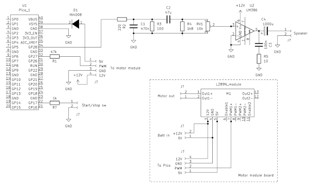

Using a Raspberry Pi Pico to control a large-scale model locomotive

In an earlier article about using PWM on the Pi Pico I described how to play sampled audio, and how effective a crude implementation would be in practice. I suggested that this approach might be suitable for sound effects, but nothing more demanding.
I also wrote earlier about controlling a DC motor using a L298N module.
As it happens, I had an application that needed both sound effects and motor control.
I’ve long had an interest in G-scale outdoor model railways. There are few things more relaxing than sitting in the garden with a beer (low-alcohol beer for me these days, sadly), and watching big model trains go around. If they chuff and whistle as they go, so much the better.
Unfortunately, I’ve been discouraged from garden railway modelling by how tedious it is to keep the power-supplying brass rails clean outdoors. Battery power is the obvious solution, but there are at least two problems.
First, batteries with sufficient capacity to push a heavy model were for a long time very expensive. Second, there still needs to be a way to control the speed of the locomotive: we need either to make the system autonomous, or provide some kind of remote control.
The first problem is no longer a significant issue: lithium-ion batteries with suitable current and voltage ratings are now affordable. That leaves the second problem.
Battery power systems are commercially available for garden railways, but they’re ruinously expensive (as is everything else for this hobby). So I thought to create a locomotive power controller based on the Raspberry Pi Pico. Not only can the Pico use PWM to control the locomotive power (and thus speed), it can generate realistic steam engine sounds using the technique I described earlier. I already know how to do both those things, so this should be easy… maybe.
At present, this project is really only a proof-of-concept. The controller is completely autonomous: the train speeds up, runs, slows down, and stops at random time intervals. Still, acceleration and deceleration are reasonably realistic, as the controller uses PWM to adjust the locomotive power smoothly. The sounds are also somewhat realistic, being derived from samples of real steam engines. It wouldn’t be difficult to extend the technique to more complex control.
Because the locomotive only runs in one direction, the train has to run on a continuous track. There’s nothing to prevent me implementing more complex scenarios later, if this basic design works out.
Design choices
Battery
The locomotive I’ve chosen for these experiments – the inexpensive “Stainz” from the LGB starter set – runs on up to 24V. However, 12V batteries are cheaper, as are some of the other electronic components if the whole system runs at 12V. I’ve found that 12V is perfectly adequate if the track is close to level. My current controller couldn’t pull a heavy train uphill, and I haven’t ruled out the possibility of using a higher battery voltage later.
At present I’m using a 12.6V, 3 amp-hour li-ion sealed battery pack. It was supplied with a proprietary charger, which charges it from flat in about twenty minutes. The battery and charger together cost £25, so it isn’t unreasonable to buy two batteries, so I can keep one on charge whilst experimenting.
Arrangement
The battery and controller are housed in a coach just behind the locomotive.
Probably the controller circuit could be miniaturized to the extent that it would fit in the locomotive body, but I doubt there would be room for the battery. Using a coach as a kind of “battery tender” means that we don’t have to work very hard to miniaturize anything: there’s plenty of room for the electronics, battery, and loudspeaker.
Power controller
It turned out to be cheaper to use a pre-assembled L289N controller module, than to design and build a controller using MOSFET power transistors. I guess that’s the benefit of mass production – these modules are used all over the place. The module has the additional advantage of taking a 12V supply, and reducing it to 5V to power the Pico board, so I didn’t need to design a separate voltage regulator.
Audio
I’m using the same PWM smoothing circuit as I described in my earlier article, but now with an audio amplifier based on the LM386 chip. The whole audio circuit consists of this chip, four resistors, four capacitors, and a small loudspeaker. None of the component choices is critical.
Manual controls
At present the controller has a single push-button: it starts the train after power is applied, and stops it immediately if pressed while the train is running. I think we need at least this single control, as the only other way to start and stop operation is by connecting and disconnecting the battery.
Electronic circuit
Here is the circuit diagram for the controller, as it currently stands.

There’s a higher-resolution image in the source code bundle (see below), along with the Kicad design file.
Converting the locomotive to battery power
It’s not difficult to convert a Stainz loco to battery power: it’s just a matter of dismantling it completely, exposing the motor terminals, and connecting them to a short piece of cable with a plug on the end. The locomotive has lights, sound, and a smoke generator, all originally powered from the track. I left all that stuff in place, in case I one day want to go back to track power. Of course, as the track is now not powered, it won’t do anything.
Although this conversion is simple, I wouldn’t feel confident doing it on a really expensive model. The Stainz is cheap – by LGB standards – and mine is already more than twenty years old.
Assembling the controller
The battery and electronic components all fit into a coach that gets pulled behind the locomotive. I’ve attached the start/stop switch in a discrete place where I can reach it easily, but it isn’t highly visible. The loudspeaker is in the floor of the coach, pointing downwards.
I’ve assembled the electronic circuit on a piece of stripboard. I might make a PCB for the final design, if I ever get to that stage. It’s simple enough that you could probably assemble it on a breadboard, if that’s your thing.
I’d advise against soldering the Pico directly to the board – whatever you use: it will be a nightmare if you ever have to remove it. I made a socket from two rows of pin headers, which are dirt cheap.
I learned the hard way to assemble the circuit board such that the Pico has its USB connector pointing upwards. That way I can connect a data cable to the Pico without any disassembly beyond taking the coach roof off. I’ve had to reprogram the Pico many, many times, and it was a drag when the USB connector was inaccessible.
It’s also helpful to put the battery terminals or connector facing upwards, since you’ll be charging it repeatedly.
The audio circuit has a volume control (RV1 in the circuit diagram). It needs to be accessible, but I find that I don’t adjust it often.
Source code
The Pico source code, Kicad circuit drawings, and sound samples are available from my GitHub repository.
In use
I’m reasonably happy with this stage of the project. The train pulls away relatively smoothly, and the loco makes realistic “chuff-chuff”, bell, and whistle sounds as it speeds up and slows down.
However, it took a lot of tweaking of the PWM parameters to get reasonably lifelike behaviour, and the settings no doubt depend on the specific locomotive and train, the weight of the battery, and many other factors. Anybody who feels like doing something similar needs to be prepared for many hours of experimentation.
Battery life depends on the weight of the train, and the ratio of moving to stationary time. In practice, I get about thirty minutes of continuous running to a charge.
Future work
My plan is to have the locomotive stop automatically at stations along the route, wait for a while, and then set off again. Currently it just stops in random places. I haven’t decided what I’ll use to signal an upcoming station – possibly magnets between the rails, and some sort of magnetic sensor in the controller.
I’d also like to have the interior of the locomotive and coaches illuminated. This is easy with track power; with a battery it requires putting electrical connections along the whole length of the train. I haven’t yet worked out how to do this elegantly. Possibly I could run fine wires to small sockets on the base of each carriage – they wouldn’t carry a lot of current.
Another interesting development would be to use a Pico-W with a wireless interface, and have the train remotely controlled using a smartphone app.
Closing remarks
Please bear in mind that this is a proof-of-concept. I doubt that the way my controller works would suit anybody else, and there would be little point in replicating my design. Still, it does prove the concept, and provide a base for future development.
Have you posted something in response to this page?
Feel free to send a webmention
to notify me, giving the URL of the blog or page that refers to
this one.